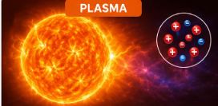

O que são os estados físicos?
Os estados físicos representam as diferentes formas em que a matéria pode ser encontrada. Eles dependem principalmente da temperatura e da pressão, que influenciam a organização e o movimento das partículas.
Estados Clássicos
Sólido
As partículas ficam muito próximas e organizadas, possuindo pouca movimentação. Por isso, os sólidos apresentam forma e volume definidos.
Exemplos: pedra, gelo, madeira e ferro.
Líquido
As partículas continuam próximas, mas conseguem deslizar umas sobre as outras. O líquido possui volume definido, mas assume a forma do recipiente.
Exemplos: água, leite e óleo.
Gasoso
As partículas ficam bem afastadas e se movimentam livremente. Os gases não possuem forma nem volume definidos.
Exemplos: oxigênio, gás carbônico e vapor d'água.
Estados Especiais da Matéria

Plasma
O plasma é considerado o quarto estado da matéria. Surge quando um gás é aquecido a temperaturas muito elevadas, fazendo com que seus átomos percam elétrons e fiquem eletricamente carregados.
É o estado mais abundante do Universo e pode ser encontrado no Sol, nas estrelas, nos raios e em lâmpadas fluorescentes.
Condensado de Bose-Einstein
Esse estado ocorre quando alguns átomos são resfriados a temperaturas muito próximas do zero absoluto (-273,15 °C). Nessas condições, eles passam a se comportar como uma única entidade quântica.
Foi obtido pela primeira vez em laboratório em 1995 e é utilizado em pesquisas avançadas da Física.